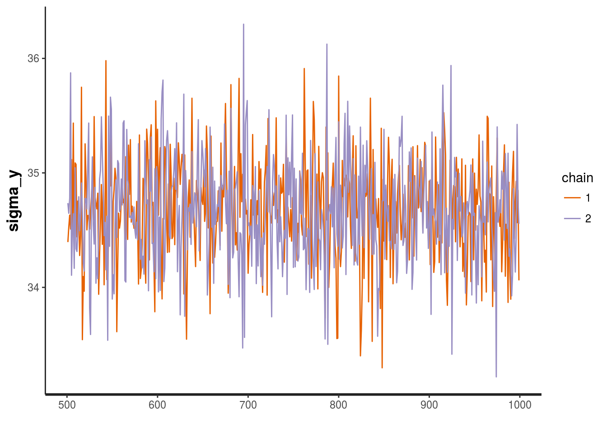
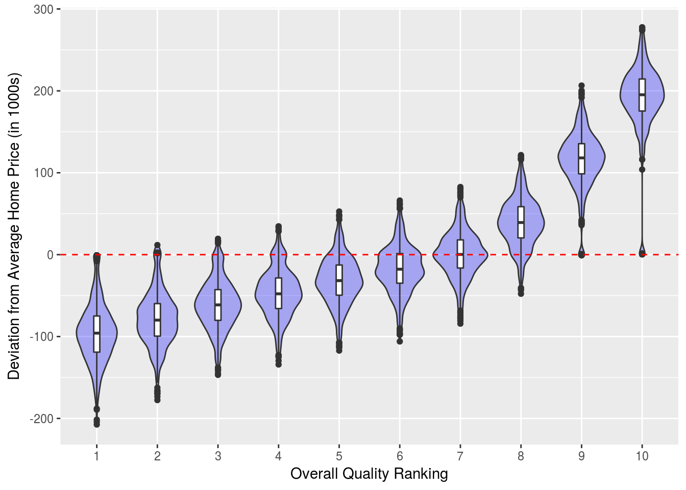
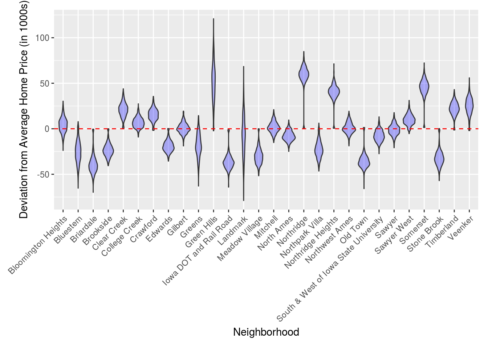

Hierarchical Housing Price Model Example
Oliver Thistlethwaite
Introduction
For this example, use hierarchical modelling to study housing prices. For our data, we’ll use the Ames Housing Data dataset. This contains data on housing prices in Ames, Iowa. It and its documentation can be found at the following urls:
http://www.amstat.org/publications/jse/v19n3/decock/AmesHousing.xls
http://www.amstat.org/publications/jse/v19n3/decock/DataDocumentation.txt
First we’ll load the required libraries for this project. We’ll be using the R implementation of STAN for our modelling.
library(caret)
library(rstan)
library(bridgesampling)
library(dplyr)
library(ggplot2)
library(tidyr)Now we’ll load our data. For this project we’ll study how the distributions of house prices vary by neighborhood. Note there is information for 28 neighborhoods and 2930 houses. We’ll also create a list of full names of the neighborhoods which can be found in the documentation.
Houses <- read.csv("AmesHousing.csv") %>% mutate(SalePrice = SalePrice / 1000)
Neighborhood_array <- c("Bloomington Heights", "Bluestem", "Briardale", "Brookside", "Clear Creek", "College Creek", "Crawford", "Edwards", "Gilbert", "Greens", "Green Hills", "Iowa DOT and Rail Road", "Landmark", "Meadow Village", "Mitchell", "North Ames", "Northridge", "Northpark Villa", "Northridge Heights", "Northwest Ames", "Old Town", "South & West of Iowa State University", "Sawyer", "Sawyer West", "Somerset", "Stone Brook", "Timberland", "Veenker")First lets just examine the distribution of prices for the first several neighborhoods.
levels(Houses$Neighborhood) <- Neighborhood_array
Houses %>% filter(Neighborhood %in% c("Bloomington Heights", "Bluestem", "Briardale", "Brookside", "Clear Creek", "College Creek")) %>%
ggplot(aes(x=SalePrice)) + geom_density(fill = "red") + facet_wrap(~Neighborhood, ncol = 3) + xlab("Sale Price (in thousands of dollars)")Crossed Hierarchical Model
Now we’ll implement a crossed hierarchical model.
We’ll be adding a predictor so to see which ones are important, we’ll use a conditional inference tree from the caret library to examine variable importance in predicting price. Note first we remove the columns with many missing values and then rows with missing values that remain.
library(caret)
Houses <- Houses %>% select(-Order, -PID, -Alley, -Fireplace.Qu, -Garage.Finish, -Garage.Qual, -Garage.Cond, -Pool.QC, -Fence, -Misc.Feature, -Lot.Frontage, -Garage.Type, -Garage.Yr.Blt) %>% na.omit()
set.seed(1234)
mod <- train(SalePrice ~ ., data = Houses, method = "ctree")
varImp(mod)## loess r-squared variable importance
##
## only 20 most important variables shown (out of 68)
##
## Overall
## Overall.Qual 100.00
## Gr.Liv.Area 81.91
## Total.Bsmt.SF 73.08
## Garage.Area 70.59
## X1st.Flr.SF 69.97
## Exter.Qual 67.20
## Garage.Cars 66.78
## Kitchen.Qual 59.81
## Bsmt.Qual 58.28
## Full.Bath 48.54
## Year.Built 48.44
## BsmtFin.SF.1 46.18
## Year.Remod.Add 43.61
## Mas.Vnr.Area 40.39
## TotRms.AbvGrd 40.30
## X2nd.Flr.SF 34.89
## Fireplaces 34.72
## Foundation 33.84
## Heating.QC 28.02
## Wood.Deck.SF 16.27This suggests Overall.Qual is the most important so we’ll use it in our model. Note this is a discrete variable that takes integers values from 1 to 10 and describes the overall quality of the house with 10 being the highest quality. Also we’ll use Gr.Liv.Area. This is the floor area of the house on the ground level. To use it in our model, we will convert it into a discrete variable by changing each sample’s value to its corresponding quartile.
Now we’ll reload our data and select the columns we’re interested in. Also we’ll transform the neighborhood names into integers.
Houses <- read.csv("AmesHousing.csv") %>%
mutate(Neighborhood = as.numeric(Neighborhood), SalePrice = SalePrice / 1000, Gr.Liv.Area = ntile(Gr.Liv.Area, 4)) %>%
select(SalePrice, Neighborhood, Overall.Qual, Gr.Liv.Area) %>% na.omit()Here is the STAN code for our model.
crossed_stan_code <-
"
data {
int<lower=0> N; //number of observations
int<lower=1,upper=10> qual_id[N]; // vector of quality indices
int<lower=1,upper=28> nbhd_id[N]; // vector of neighborhood indices
int<lower=1,upper=28> area_id[N]; // vector of area indices
vector[N] y;
}
parameters {
vector[10] gamma; // vector of quality deviation from the average
vector[28] delta; // vector of neighborhood deviation from the average
vector[4] epsilon; // vector of area quantile deviation from the average
real<lower=0> mu; // average house price value
real<lower=0> sigma_gamma; // standard deviation of the gamma coefficients
real<lower=0> sigma_delta; // standard deviation of the delta coefficients
real<lower=0> sigma_epsilon; // standard deviation of the epsilon coefficients
real<lower=0> sigma_y; // standard deviation of the observations
}
transformed parameters {
vector[N] y_hat;
for (i in 1:N)
y_hat[i] = mu + gamma[qual_id[i]] + delta[nbhd_id[i]] + epsilon[area_id[i]];
}
model {
// priors on the scale coefficient
sigma_gamma ~ cauchy(0,2.5);
sigma_delta ~ cauchy(0,2.5);
sigma_epsilon ~ cauchy(0,2.5);
sigma_y ~ gamma(2,0.1);
// gets quality and neighborhood level deviation
gamma ~ normal(0, sigma_gamma);
delta ~ normal(0, sigma_delta);
epsilon ~ normal(0, sigma_epsilon);
// the likelihood
y ~ normal(y_hat, sigma_y);
}
"Now we’ll train our model. Note we are using Markov chain Monte Carlo (MCMC) to increase our sample size. The chains parameter specifies the number of Markov chains and the iter parameter specifies the number of iterations for each chain.
set.seed(1234)
dat<-list(N = nrow(Houses), qual_id = Houses$Overall.Qual, nbhd_id = Houses$Neighborhood, area_id = Houses$Gr.Liv.Area, y = Houses$SalePrice)
mod <-stan(model_code = crossed_stan_code , data=dat, iter=1000, chains=2, control = list(max_treedepth = 12))## In file included from /home/oliver/R/x86_64-pc-linux-gnu-library/3.4/BH/include/boost/config.hpp:39:0,
## from /home/oliver/R/x86_64-pc-linux-gnu-library/3.4/BH/include/boost/math/tools/config.hpp:13,
## from /home/oliver/R/x86_64-pc-linux-gnu-library/3.4/StanHeaders/include/stan/math/rev/core/var.hpp:7,
## from /home/oliver/R/x86_64-pc-linux-gnu-library/3.4/StanHeaders/include/stan/math/rev/core/gevv_vvv_vari.hpp:5,
## from /home/oliver/R/x86_64-pc-linux-gnu-library/3.4/StanHeaders/include/stan/math/rev/core.hpp:12,
## from /home/oliver/R/x86_64-pc-linux-gnu-library/3.4/StanHeaders/include/stan/math/rev/mat.hpp:4,
## from /home/oliver/R/x86_64-pc-linux-gnu-library/3.4/StanHeaders/include/stan/math.hpp:4,
## from /home/oliver/R/x86_64-pc-linux-gnu-library/3.4/StanHeaders/include/src/stan/model/model_header.hpp:4,
## from file3b235bbb036.cpp:8:
## /home/oliver/R/x86_64-pc-linux-gnu-library/3.4/BH/include/boost/config/compiler/gcc.hpp:186:0: warning: "BOOST_NO_CXX11_RVALUE_REFERENCES" redefined
## # define BOOST_NO_CXX11_RVALUE_REFERENCES
## ^
## <command-line>:0:0: note: this is the location of the previous definition
##
## SAMPLING FOR MODEL 'a52f346d5fa1d3aa5972e8a11bf1ed6f' NOW (CHAIN 1).
##
## Gradient evaluation took 0.000302 seconds
## 1000 transitions using 10 leapfrog steps per transition would take 3.02 seconds.
## Adjust your expectations accordingly!
##
##
## Iteration: 1 / 1000 [ 0%] (Warmup)
## Iteration: 100 / 1000 [ 10%] (Warmup)
## Iteration: 200 / 1000 [ 20%] (Warmup)
## Iteration: 300 / 1000 [ 30%] (Warmup)
## Iteration: 400 / 1000 [ 40%] (Warmup)
## Iteration: 500 / 1000 [ 50%] (Warmup)
## Iteration: 501 / 1000 [ 50%] (Sampling)
## Iteration: 600 / 1000 [ 60%] (Sampling)
## Iteration: 700 / 1000 [ 70%] (Sampling)
## Iteration: 800 / 1000 [ 80%] (Sampling)
## Iteration: 900 / 1000 [ 90%] (Sampling)
## Iteration: 1000 / 1000 [100%] (Sampling)
##
## Elapsed Time: 68.6429 seconds (Warm-up)
## 27.8893 seconds (Sampling)
## 96.5322 seconds (Total)
##
##
## SAMPLING FOR MODEL 'a52f346d5fa1d3aa5972e8a11bf1ed6f' NOW (CHAIN 2).
##
## Gradient evaluation took 0.000236 seconds
## 1000 transitions using 10 leapfrog steps per transition would take 2.36 seconds.
## Adjust your expectations accordingly!
##
##
## Iteration: 1 / 1000 [ 0%] (Warmup)
## Iteration: 100 / 1000 [ 10%] (Warmup)
## Iteration: 200 / 1000 [ 20%] (Warmup)
## Iteration: 300 / 1000 [ 30%] (Warmup)
## Iteration: 400 / 1000 [ 40%] (Warmup)
## Iteration: 500 / 1000 [ 50%] (Warmup)
## Iteration: 501 / 1000 [ 50%] (Sampling)
## Iteration: 600 / 1000 [ 60%] (Sampling)
## Iteration: 700 / 1000 [ 70%] (Sampling)
## Iteration: 800 / 1000 [ 80%] (Sampling)
## Iteration: 900 / 1000 [ 90%] (Sampling)
## Iteration: 1000 / 1000 [100%] (Sampling)
##
## Elapsed Time: 79.1185 seconds (Warm-up)
## 39.8585 seconds (Sampling)
## 118.977 seconds (Total)We received no errors! Now we’ll examine the trace of sigma_y (the standard deviation of all the observations) in our MCMC model.
stan_trace(mod, pars = c("sigma_y"))
Now we’ll extract out out samples produced and put them in a dataframe.
crossed_samples <- as.data.frame( mod@sim$samples ) %>% select(gamma.1. : epsilon.4.)
Qual_stats <- crossed_samples %>% select(gamma.1. : gamma.10.) %>%
gather(key = Qual, value = SalePrice) %>%
arrange(Qual) %>%
group_by(Qual) %>% summarise(mean = mean(SalePrice), sd = sd(SalePrice)) %>%
mutate(Qual = as.numeric( gsub("[^0-9]", "", Qual))) %>%
arrange(Qual)
Neighborhood_stats <- crossed_samples %>% select(delta.1. : delta.28.) %>%
gather(key = Neighborhood, value = SalePrice) %>%
group_by(Neighborhood) %>% summarise(mean = mean(SalePrice), sd = sd(SalePrice)) %>%
mutate(Neighborhood = as.factor(as.numeric( gsub("[^0-9]", "", Neighborhood)))) %>%
arrange(Neighborhood)
Area_stats <- crossed_samples %>% select(epsilon.1. : epsilon.4.) %>%
gather(key = Area_quartile, value = SalePrice) %>%
group_by(Area_quartile) %>% summarise(mean = mean(SalePrice), sd = sd(SalePrice)) %>%
mutate(Area_quartile = as.factor(as.numeric( gsub("[^0-9]", "", Area_quartile)))) %>%
arrange(Area_quartile)Now we’ll look at the deviation from the mean home price for each quality class. Interestingly, this suggests we need a rank of 8 to be significantly above the average home price.
Qual_stats %>% ggplot(aes(x = Qual, y = mean)) +
geom_point() +
scale_x_continuous(breaks= 1:10) +
geom_segment(aes(x = Qual, y = mean+sd, xend = Qual, yend = mean-sd), color = "blue") +
geom_hline(aes(yintercept=0), colour="red", linetype="dashed") +
xlab("Overall Quality Ranking") +
ylab("Deviation from Average Home Price (in 1000s)")
Now we’ll do the same thing only for the neighborhoods.
levels(Neighborhood_stats$Neighborhood) <- Neighborhood_array
Neighborhood_stats %>% ggplot(aes(x = Neighborhood, y = mean)) +
geom_point() +
geom_segment(aes(x = Neighborhood, y = mean+sd, xend = Neighborhood, yend = mean-sd), color = "blue") +
geom_hline(aes(yintercept=0), colour="red", linetype="dashed") +
theme(axis.text.x = element_text(angle = 45, hjust = 1, vjust = 1), plot.margin = margin(10, 10, 10, 20)) +
ylab("Deviation from Average Home Price (in 1000s)")
Finally for the quartiles of total ground floor area.
Area_stats %>% ggplot(aes(x = Area_quartile, y = mean)) +
geom_point() +
geom_segment(aes(x = Area_quartile, y = mean+sd, xend = Area_quartile, yend = mean-sd), color = "blue") +
geom_hline(aes(yintercept=0), colour="red", linetype="dashed") +
xlab("Quartile of Ground Floor Area") +
ylab("Deviation from Average Home Price (in 1000s)")
Now we’ll try a non-hierarchical normal model and compare it to to the hierarchical model.
non_hier_stan_code <-
"
data {
int<lower=0> N; //number of observations
int<lower=1,upper=10> qual_id[N]; // vector of quality indices
int<lower=1,upper=28> nbhd_id[N]; // vector of neighborhood indices
int<lower=1,upper=28> area_id[N]; // vector of area indices
vector[N] y;
}
parameters {
real y_hat;
real<lower=0> sigma_y; // standard deviation of the observations
}
model {
y ~ normal(y_hat, sigma_y);
}
"set.seed(1234)
non_hier_mod <-stan(model_code = non_hier_stan_code , data=dat, iter=1000, chains=2, control = list(max_treedepth = 12))## In file included from /home/oliver/R/x86_64-pc-linux-gnu-library/3.4/BH/include/boost/config.hpp:39:0,
## from /home/oliver/R/x86_64-pc-linux-gnu-library/3.4/BH/include/boost/math/tools/config.hpp:13,
## from /home/oliver/R/x86_64-pc-linux-gnu-library/3.4/StanHeaders/include/stan/math/rev/core/var.hpp:7,
## from /home/oliver/R/x86_64-pc-linux-gnu-library/3.4/StanHeaders/include/stan/math/rev/core/gevv_vvv_vari.hpp:5,
## from /home/oliver/R/x86_64-pc-linux-gnu-library/3.4/StanHeaders/include/stan/math/rev/core.hpp:12,
## from /home/oliver/R/x86_64-pc-linux-gnu-library/3.4/StanHeaders/include/stan/math/rev/mat.hpp:4,
## from /home/oliver/R/x86_64-pc-linux-gnu-library/3.4/StanHeaders/include/stan/math.hpp:4,
## from /home/oliver/R/x86_64-pc-linux-gnu-library/3.4/StanHeaders/include/src/stan/model/model_header.hpp:4,
## from file3b2379d2634c.cpp:8:
## /home/oliver/R/x86_64-pc-linux-gnu-library/3.4/BH/include/boost/config/compiler/gcc.hpp:186:0: warning: "BOOST_NO_CXX11_RVALUE_REFERENCES" redefined
## # define BOOST_NO_CXX11_RVALUE_REFERENCES
## ^
## <command-line>:0:0: note: this is the location of the previous definition
##
## SAMPLING FOR MODEL '65fd36463a945785e293cc5a5f37232a' NOW (CHAIN 1).
##
## Gradient evaluation took 1.5e-05 seconds
## 1000 transitions using 10 leapfrog steps per transition would take 0.15 seconds.
## Adjust your expectations accordingly!
##
##
## Iteration: 1 / 1000 [ 0%] (Warmup)
## Iteration: 100 / 1000 [ 10%] (Warmup)
## Iteration: 200 / 1000 [ 20%] (Warmup)
## Iteration: 300 / 1000 [ 30%] (Warmup)
## Iteration: 400 / 1000 [ 40%] (Warmup)
## Iteration: 500 / 1000 [ 50%] (Warmup)
## Iteration: 501 / 1000 [ 50%] (Sampling)
## Iteration: 600 / 1000 [ 60%] (Sampling)
## Iteration: 700 / 1000 [ 70%] (Sampling)
## Iteration: 800 / 1000 [ 80%] (Sampling)
## Iteration: 900 / 1000 [ 90%] (Sampling)
## Iteration: 1000 / 1000 [100%] (Sampling)
##
## Elapsed Time: 0.043819 seconds (Warm-up)
## 0.023113 seconds (Sampling)
## 0.066932 seconds (Total)
##
##
## SAMPLING FOR MODEL '65fd36463a945785e293cc5a5f37232a' NOW (CHAIN 2).
##
## Gradient evaluation took 1e-05 seconds
## 1000 transitions using 10 leapfrog steps per transition would take 0.1 seconds.
## Adjust your expectations accordingly!
##
##
## Iteration: 1 / 1000 [ 0%] (Warmup)
## Iteration: 100 / 1000 [ 10%] (Warmup)
## Iteration: 200 / 1000 [ 20%] (Warmup)
## Iteration: 300 / 1000 [ 30%] (Warmup)
## Iteration: 400 / 1000 [ 40%] (Warmup)
## Iteration: 500 / 1000 [ 50%] (Warmup)
## Iteration: 501 / 1000 [ 50%] (Sampling)
## Iteration: 600 / 1000 [ 60%] (Sampling)
## Iteration: 700 / 1000 [ 70%] (Sampling)
## Iteration: 800 / 1000 [ 80%] (Sampling)
## Iteration: 900 / 1000 [ 90%] (Sampling)
## Iteration: 1000 / 1000 [100%] (Sampling)
##
## Elapsed Time: 0.04297 seconds (Warm-up)
## 0.024211 seconds (Sampling)
## 0.067181 seconds (Total)To compare the the models, we can compute the Bayes factor by using the bf function in the bridgesampling package. Here we compute the Bayes factor, which quantifies how much more likely the data is under the hierarchical model versus the non-hierarchical model.
set.seed(1234)
mod.bridge <- bridge_sampler(mod, silent = TRUE)
non_hier_mod.bridge <- bridge_sampler(non_hier_mod, silent = TRUE)
bf(mod.bridge, non_hier_mod.bridge)## The estimated Bayes factor in favor of x1 over x2 is equal to: InfReferences
- Cock, D. Ames, Iowa: Alternative to the Boston Housing Data as an End of Semester Regression Project
- Fonnesbeck, C. A Primer on Bayesian Multilevel Modeling using PyStan
- Harris, M. Estimating a beta distribution with STAN
- Hertzog, L. Hierarchical models with RSTAN part 1
- Ozaki, T. Bayesian modeling with R and Stan (3): Simple hierarchical Bayesian model